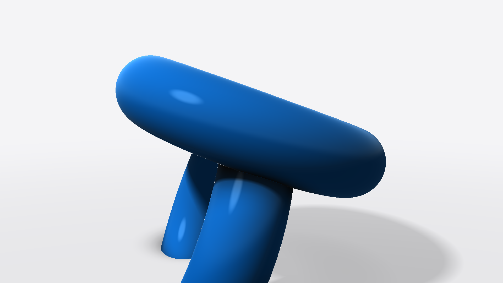

Estudo do vídeo "Claude criou esse vídeo sobre o fim do mundo" (canal O Programador), pesquisa de como trazer shaders e 3D por cálculo para o Remotion, e o plano completo do vídeo-vitrine.
Em uma frase: o vídeo de referência não foi editado, foi programado: cada quadro é uma função do tempo da música, desenhada por shaders GLSL rodando na placa de vídeo, com tipografia sincronizada palavra por palavra. Nós já fazíamos a metade "função do tempo + palavra" no Remotion; faltava a camada GLSL. Ela agora existe e foi testada na nuvem.
O que vai sair daqui: uma camada Shader no motor, uma biblioteca GLSL nossa, quatro blocos novos (objeto 3D calculado, campo de textura, transição por shader, acabamento de filme) e um vídeo-vitrine de 28 s, 1920×1080, que mostra tudo isso no nosso estilo.
O código do clipe é público (github.com/oprogramadorreal/pdoom-video, cópia do original de Giacomo Magnanini, licença MIT). Li o código, a documentação do motor e o "style bible" deles. Isso vale mais do que assistir: dá para ver exatamente como cada efeito foi feito.
| Técnica | Como eles fizeram | O que levamos |
|---|---|---|
| Quadro = função do tempo | Nada de timer: dado o segundo exato, o programa calcula a imagem, sempre igual. Preview e render final são idênticos. | O Remotion já funciona assim. Mantemos a regra também dentro dos shaders. |
| Tudo preso à voz | Alinhamento forçado palavra por palavra (Whisper + CTC) e análise da música (BPM, batidas, bumbo, caixa). Cortes no tempo forte; palavra acende no início exato dela. | Nossa spec já ancora em palavras. Vamos ancorar também uniforms do shader (luz, câmera, varredura) nas palavras. |
| 3D sem modelo (raymarching) | O monstro, os clipes de papel e a sala são fórmulas de distância (SDF). O shader "anda" pelo raio até tocar a superfície e calcula luz, sombra suave, oclusão e reflexo. | Bloco Objeto3D. Testado: objeto 3D com sombra e reflexo em 1080p. |
| Estilo de gravura | As sombras viram hachuras de gravura (linhas que engrossam no escuro), em vez de degradê. É o que tira a cara de "3D de computador". | Função hachura() na biblioteca, para quando um vídeo pedir esse registro. |
| Pós-produção em shader | Bloom, halação, aberração cromática nas bordas, curva de tom, grão de filme em duas escalas, vinheta, flash, tremida e zoom de impacto: uma cadeia fixa aplicada ao quadro inteiro. | Bloco Acabamento (grão + vinheta + halação suave), por cima de tudo. |
| Motion blur de verdade | Cada quadro é a média de 4 a 324 subquadros, escolhidos automaticamente: parado usa poucos, chicote usa muitos. | CameraMotionBlur do Remotion só nos trechos rápidos (é caro na nuvem). |
| Disciplina visual | Uma paleta curta (preto, osso, um laranja de sinal, um acento raro), 3 famílias de fonte com papéis fixos, "nada de neon, cérebro brilhante, chuva de Matrix". Cada cena tem uma ideia visual, nunca ilustração literal da letra. | Igual ao nosso DESIGN-SYSTEM. Confirma o caminho: restrição é o que deixa sofisticado. |
| Processo | Tratamento escrito cena a cena antes do código; um "líder" e vários agentes, um por cena; cada um confere seu trabalho por stills e folhas de contato antes do vídeo. | É o nosso fluxo referência, SPEC, plano, stills, render, crítica. |
O "uau" do vídeo não vem do GLSL em si. Vem de três coisas juntas: (1) uma ideia visual diferente para cada frase, (2) tudo cravado no tempo exato da voz, e (3) o GLSL para fazer o que o HTML não faz: luz calculada, 3D sem modelo, textura viva e acabamento de filme. Sem (1) e (2), shader vira só fundo bonito. Por isso o plano abaixo começa pelo roteiro, não pelo efeito.
Sim. O nome técnico é raymarching com campos de distância (SDF). Em vez de desenhar um modelo com triângulos (Blender), eu escrevo uma fórmula que diz, para qualquer ponto do espaço, a que distância ele está do objeto. Juntando fórmulas simples (esfera, caixa arredondada, toro) com "união suave", sai qualquer forma orgânica. Para cada pixel, o shader:
Vantagens sobre o Blender para o nosso caso: é texto (eu escrevo e ajusto sozinho, sem você abrir programa), cada parâmetro pode ser preso a uma palavra da locução, a forma pode se transformar em outra de modo contínuo, e é infinitamente nítido. Limites honestos: personagem realista, roupa e rosto continuam sendo trabalho de modelo 3D ou de vídeo de IA; e na nuvem não há placa de vídeo, então cenas 3D pesadas renderizam a ~1,5 quadro/s (seu PC com placa de vídeo seria muito mais rápido, se um dia precisarmos).

Teste cru de hoje, renderizado na nuvem pelo nosso motor: dois toros entrelaçados só de fórmula, com sombra suave no chão, oclusão e reflexo do softbox. 30 quadros em 19 s. O enquadramento será refeito no vídeo.
| Caminho | Prós | Contras | Decisão |
|---|---|---|---|
| A. Canvas WebGL2 próprio (componente Shader) | Zero dependência, controle total, determinístico, rápido; recompila uma vez e só troca números a cada quadro. Fica transparente: dá para empilhar com React por cima e por baixo. | Sem cena 3D pronta (malhas, câmera): para isso existe o caminho B. | Padrão |
| B. three.js via @remotion/three | Malhas, modelos .glb, materiais, pós-processamento pronto. É o que o vídeo de referência usou (sem Remotion). | Mais peso e mais um jeito de pensar; para 2D e raymarching não acrescenta nada. | Quando houver modelo 3D importado |
| C. Duas passadas (React vira vídeo, o vídeo vira textura do shader) | Permite deformar a própria tipografia e as telas React com shader (ondulação, vidro quebrado, dissolução do quadro inteiro). | Render dobrado. Só se o efeito pedir. | Plano B, sob demanda |
| D. Biblioteca de transições GLSL prontas (gl-transitions) | Dezenas de transições prontas. | Muitas têm cara de "efeito de editor" (proibição P11 do nosso padrão). | Só como estudo |
Cada quadro é uma pilha de camadas, de baixo para cima:
| Arquivo | Papel |
|---|---|
| src/glsl/Shader.tsx | Canvas WebGL2: compila o shader uma vez, passa t, resolução e uniforms a cada quadro. Pronto e testado. |
| src/glsl/comum.ts | Nossa biblioteca GLSL: ruído simplex e fbm, formas (SDF), união suave, sombra suave, oclusão, Fresnel, ambiente de estúdio, hachura, sRGB, paleta do design system. Partes adaptadas do código MIT da referência, com crédito. |
| src/motor/chaves.ts | Animação de números presa a palavras: [["luz", 1.2, "approach"], ["sombra", 2.4, "expressiva"]]. Serve para qualquer bloco, não só GLSL. |
| blocos/Objeto3D.tsx | Cena 3D por raymarching: forma, câmera, luz, varredura "raio X", pixelização, derretimento. Tudo por uniforms. |
| blocos/Campo.tsx | Textura viva 2D (fbm com distorção de domínio): tinta azul fluindo sobre papel. |
| blocos/Dissolve.tsx | Transição: o papel "come" a cena por um limiar de ruído, com um fio azul fino na frente. |
| blocos/Acabamento.tsx | Pós: grão em duas escalas, vinheta, halação. Transparente, por cima de tudo. |
| blocos/Hud.tsx, Rotulo.tsx | Timecode e número do quadro (o fio que costura as cenas); rótulo mono com linha-guia apontando para uma região. |
Objetivo: uma vitrine de 28 s que prove, para você e para clientes, que o motor agora faz luz, 3D e textura calculados, no nosso estilo. Formato: 1920×1080, 30 fps (vertical depois, se você quiser). Estilo: fundo claro de estúdio, um azul só, Inter + uma mono para a "voz da máquina", movimento com mola, um foco por quadro.
| Tempo | Fala | Imagem e movimento | Técnica | Som |
|---|---|---|---|---|
| 0,0–2,5 | "Isso não foi filmado." | Quadro 1 já pronto: dois anéis azuis entrelaçados num estúdio claro, girando devagar, câmera aproximando. "filmado" sobe da máscara e um traço o risca no fim da palavra. HUD no canto: t = 0,000 s · quadro 0001. | Objeto3D, Batida, Hud | cama entra; tique no risco |
| 2,5–5,2 | "E também não foi modelado." | Câmera dá meia volta rápida no objeto (chicote com motion blur) em "modelado"; a palavra é riscada igual. | Objeto3D (câmera), CameraMotionBlur | whoosh no pico do giro |
| 5,2–8,0 | "É uma fórmula." | Vitrine 1. Uma faixa de varredura atravessa a tela; atrás dela o objeto vira a sua matemática: curvas de nível do campo de distância em fio azul sobre papel. A fórmula é digitada em mono ao lado: d = min(toro(p), toro(q)) - 0.2. "fórmula" pousa em Inter 700. | Objeto3D (modo raio X), Rotulo | varredura (swish longo), teclas |
| 8,0–12,0 | "O código calcula a luz, a sombra, e o reflexo." | Em "luz" a luz gira e o sombreado acompanha; em "sombra" a sombra varre o chão; em "reflexo" o brilho do softbox desliza pela superfície. Cada palavra ganha um rótulo mono com linha-guia apontando para o que mudou. | uniforms presos a palavras, Rotulo | 3 pops suaves, um por rótulo |
| 12,0–14,9 | "Pixel por pixel." | Vitrine 2. No primeiro "pixel" a imagem vira blocos grandes de 1 cor; um bloco acende e mostra o seu valor rgb(0, 113, 227). No segundo "pixel" tudo volta à nitidez num estalo. | Objeto3D (pixelização) | tique em cada estalo |
| 14,9–17,7 | "A mesma matemática vira textura," | O objeto derrete no chão (união suave) e o chão vira tinta azul fluindo sobre papel, ocupando o quadro. "textura" entra em Inter. | Objeto3D, depois Campo | riser curto |
| 17,7–19,3 | "transição," | O papel come a textura por um limiar de ruído, com um fio azul fino na frente da borda. | Dissolve | swish |
| 19,3–22,2 | "e acabamento de cinema." | Vitrine 3. Tela dividida por uma linha que corre: à esquerda o quadro "cru", à direita o mesmo quadro com grão, vinheta e halação. Rótulos sem / com. | Acabamento (com máscara) | cama abre no respiro |
| 22,2–28,4 | "Agora, o nosso motor fala GLSL." | O objeto volta pequeno ao centro. Cartão final: "Estúdio" e, abaixo, as letras G · L · S · L batendo cada uma no instante em que a voz diz a letra. Segura, câmera em push-in lento, fade do som. | Objeto3D, Slam por letra, Acabamento | impacto leve na última letra |
| Item | Valor |
|---|---|
| Fundo de estúdio | #F5F5F7 |
| Texto | #1D1D1F |
| Cor única de destaque | #0071E3 |
| Fontes | Inter 500/700 (fala), JetBrains Mono 400 (máquina) |
| Palavra grande | Inter 700, 120–150 px, tracking -0,02 em |
| Rótulos | mono 24 px, tracking +0,02 em |
| Legenda contínua | Inter 500, 50 px, base em 87% da altura |
| Item | Valor |
|---|---|
| Entradas | approach k = 0,15; nunca de escala 0 |
| Durações | rótulo 9–12 q; palavra grande 15–23 q; câmera 30–45 q |
| Motion blur | só no chicote de câmera, 8 subquadros |
| Objeto 3D | até 120 passos, sombra 48, 2×2 amostras parado |
| Grão | amplitude 0,035, duas escalas, mais nos meios-tons |
| Voz / cama | voz -16 LUFS; cama 18–22 LU abaixo, sobe nos respiros |
| Master | -14 LUFS, pico -1 dBTP |
| # | Etapa | Como confiro |
|---|---|---|
| 1 | Biblioteca comum.ts + chaves.ts | compila; still de cada função |
| 2 | Objeto3D com os modos (normal, raio X, pixel, derreter) e enquadramento final | 5 stills por modo, com zoom |
| 3 | Campo, Dissolve, Acabamento | folha de contato a cada 0,2 s |
| 4 | Spec do vídeo + tipografia, rótulos, HUD, legenda | 5 stills-chave (abertura, fórmula, pixel, acabamento, final) |
| 5 | Áudio: cama, efeitos nos quadros, ducking, -14 LUFS | medição de loudness e margem de voz |
| 6 | Render completo + crítica por uma sessão nova, contra este plano e o DESIGN-SYSTEM | nota 8/10 ou mais antes de entregar |
| 7 | Lições na motion-base e ESTADO.md com comandos para refazer | arquivo salvo na pasta do projeto |
Arquivos: plano em /estudio/glsl/plano/, trabalho em /estudio/glsl/trabalho/ (ESTADO.md), código no motor /estudio/motor/src/glsl/. Referência: github.com/oprogramadorreal/pdoom-video (MIT), vídeo youtube.com/watch?v=CLD-GSpl5Q0.